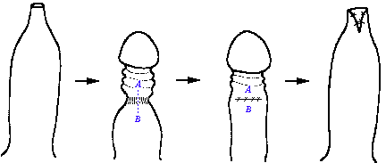

By Peter M. Cuckow, Gerald Rix, and Pierre
D.E. Mouriquand
Cambridge, England
Since 1991, boys needing surgery for tight nonretractile
foreskin have been offered a choice of preputial plasty or
circumcision, providing that there is no clinical evidence of
preputial scarring. We compared two similar groups of 50 boys
that underwent each procedure, through our routine audit and
questionnaires sent to their parents. Of the boys with
circumcisions, 20% required an overnight stay after the
operation; 14% had anesthetic complications, and 6% required
reoperation because of bleeding. Only 8% of patients with
preputial plasty had an overnight stay, and no bleeding was
observed. Parental assessment of both
operations showed that morbidity was significantly less and
of shorter duration for the preputial plasty group.
Two patients in the preputial plasty group (4%) had recurrent
narrowing of the foreskin caused by scarring and contraction
of the incision. Parents were pleased with the long-term
results of both procedures. This simple alternative to
circumcision is easy to perform and allows full mobilization
of the foreskin, preserving its function and providing an
excellent cosmetic result.
Copyright © 1994 by W.B. Saunders Company
INDEX WORDS: Circumcision, alternative.
Treatment for the complications of a tight nonretractile foreskin in British boys is almost exclusively circumcision. With this radical approach, some patients experience postoperative complications and have poor cosmetic results. Moreover, the normal protective and sexual functions of the foreskin are lost, and irreversible changes occur in the epithelium of the glans. Less radical approaches have failed to gain general acceptance because of their often complex and specialized nature or allegedly poor cosmetic results. A small number of our patients, in whom scarring of the prepuce has occurred because of recurrent infection or, rarely, from balanitis xerotica et obliterans, are always treated by circumcision. The parents of the remainder have been given a choice between circumcision and a conservative technique - preputial plasty. This policy has enabled the study and comparison of two similar groups of patients.
The technique of preputial plasty is illustrated in Fig 1. The foreskin is mobilized, dividing glanular adhesions, and retracted to show the tight constricting band. This is incised longitudinally, along the dorsum of the penis. The underlying tissue is spread with artery forceps to expose Bucks' fascia, and the incision is closed transversely with absorbable sutures. This widens the tube of the prepuce and allows its free movement. Apart from lignocaine gel applied to the glans and suture line, no other local anesthetic is used. Parents are advised to mobilize the foreskin regularly, once the initial discomfort has subsided. A standard technique is used for circumcision, and these patients are given either a caudal or penile local anesthetic block. All operations were performed or directly supervised by a senior surgeon, and all patients had follow-up in the outpatient department, between 4 and 6 weeks after surgery.

The results of the first 50 patients undergoing each procedure were reviewed retrospectively. There was no significant difference in age distribution between the two groups (range, 19 months to 12.3 years for preputial plasty, and 2.7 to 14.2 years for circumcision; mean 6.34 years and 6.63 years, respectively). The distribution of in patient and day surgery cases was also similar (38% and 62% for preputial plasty, 40% and 60% for circumcision). Data from the department's clinical audit database and outpatient follow-up clinics provided objective information about postoperative complications. More information regarding operative morbidity and patient satisfaction was obtained by sending a questionnaire to all parents, who were asked to answer questions by selecting from graded responses. There was also the opportunity for more detailed description of problems and further follow-up in the clinic, if desired. Forty completed questionnaires were received from the preputial plasty group (80%) and 38 from the circumcision group (76%). The data obtained were analyzed and expressed as percentages to enable direct comparisons between the two groups.
The reported surgical complications are listed in Table 1. Our normal practice is to discharge patients the evening after their surgery. Twenty percent of those who underwent circumcision required an overnight stay because of bleeding or anesthetic complications (nausea, vomiting, drowsiness) compared with 8% in the preputial plasty group. Interestingly, there were no overnight admissions from the day surgical unit during the study period, and no patient required catheterization for urinary retention. Infection or inflammation of the penis seen in outpatients, and presenting as gross preputial edema in one patient after preputial plasty, was treated by bathing in aqueous chlorhexidine solution. Recurrent adhesions were divided in the clinic, using topical lignocaine. Two patients who did not attempt foreskin mobilization after preputial plasty (4%) had recurrent narrowing of the foreskin, which resulted from scarring and contraction of the incision. Both were offered circumcision. Poor cosmetic results were due to an excess of mucosa (two circumcisions) or scarring (one preputial plasty).
| Complication | Preputial Plasty | Circumcision |
|---|---|---|
| Bleeding requiring reoperation Retention of urine Overnight stay due to anesthetic Infected/inflamed penis Huge edema Recurrent adhesions Nonretractile foreskin Poor cosmetic result |
- - 8% (4) 10% (5) 2% (1) 2% (1) 4% (2) 2% (1) |
6% (3) - 14% (7) 12% (6) - 2% (1) - 6% (3) |
Parental assessment of distress in the first 24 hours was dramatically greater in the circumcision group, despite the use of nerve blocks. There were also more problems with bleeding; however, difficulty in passing urine (mainly dysuria) was slightly greater for patients with preputial plasty (Table 2). More patients in the circumcision group consulted their general practitioner for help (45% v 20%), mainly because of concern over the appearance of the penis and infection of the suture line. Two or more visits were required for 29% of circumcision patients, and for 7.5% of preputial plasty patients.
| Severity | ||||||
|---|---|---|---|---|---|---|
| Question | Procedure | None | Negligible | Moderate | Poor | Severe |
| Any postoperative distress? | Preputial plasty Circumcision |
45% (18) 5.5% (2) |
27.5% (11) 13% (5) |
27.5% (11) 39.5% (15) |
- 29% (11) |
- 13% (5) |
| Any postoperative bleeding? | Preputial plasty Circumcision |
37.5% (15) 21% (8) |
45% (18) 45% (17) |
17.5% (7) 21% (8) |
- 5% (2) |
- 8% (3) |
| Any problems passing urine? | Preputial plasty Circumcision |
32.5% (13) 45% (17) |
30% (12) 18.5% (7) |
27.5% (11) 23.5% (9) |
10% (4) 8% (3) |
- 5% (2) |
| Time From Surgery | ||||||
|---|---|---|---|---|---|---|
| Question | Procedure | < 2 d | 2 to 7 d | 1 to 2 wk | > 2 wk | |
| When could normal underwear be worn with comfort? | Preputial Plasty Circumcision |
37.5% (15) 5% (2) |
55% (22) 37% (14) |
5% (2) 42% (16) |
2.5% (1) 16% (6) |
|
Circumcision is associated with considerable morbidity. It is often performed by unsupervised junior surgeons in district hospitals, and the actual complication rate may be much higher than that reported from specialized pediatric centers [1], [2]. There is no doubt that far too many patients are referred for circumcision because of a lack of understanding of normal preputial development [3-5]. However, even when strict criteria are adopted, many tight unscarred prepuces are still subjected to circumcision on medical grounds or because of parental pressure [6]. Although the clinically scarred prepuce, because of recurrent infection or balanitis xerotica et obliterans [7], represents an absolute indication for circumcision, the remainder are suitable for more conservative treatment.
Several alternatives to circumcision have been proposed, all aimed at widening the prepuce to allow its easy retraction and better hygiene, while retaining the normal cosmetic appearance of the penis. These range from local resection of the phimotic ring [8] to more complex V-Y and Z plasties of the prepuce [9-11] and helicoid plasty [12]. Unfortunately, there is little objective data to support the claims of excellent results with these procedures, and no complication rates are reported. The complicated nature of many of these procedures has almost certainly limited their acceptance to enthusiasts and specialists in plastic surgery. Most recently, a technique of triple incision plasty was reported, together with the results of 63 cases [13], one of which bled and four (6.3%) required reoperation.
Preputial plasty by a single dorsal incision of the prepuce has already been described [14], and is used widely throughout Europe [15]. Its simplicity and, in particular, the avoidance of the frenular area of the penis make it a quick, easy, and safe operation, with few complications even in inexperienced hands. In our study, its success is evident by the absence of serious bleeding problems, the improvement in post-operative morbidity, and the high level of patient satisfaction. The poor cosmetic results used to justify more complex procedures [13] are not borne out by our patients or by the long-term results observed in our clinic.
Attention is now being given to the physiological role of the foreskin by groups in the United States that oppose circumcision [16]. It certainly protects the sensitive skin of the glans, provides additional lubrication, and allows greater freedom of movement during sexual intercourse. Although meatal stenosis has not developed in any patient in the circumcision group, six patients have returned for meatoplasty in the past 2 years. Preputial plasty is a quick and safe method of preserving preputial function in patients needing surgical relief of a tight but unscarred foreskin. Compared with circumcision, preputial plasty has few complications, and functional and cosmetic results are good, providing the prepuce is mobilized regularly after surgery.
From the Department of Paediatric Surgery, Addenbrooke's Hospital, Cambridge,
England.
Date accepted: April 8, 1993.
Address reprint requests to:
Copyright © 1994 by W.B. Saunders Company
http://www.cirp.org/library/treatment/phimosis/cuckow/